def convert_lon(x):
return -1*float(x[:-1]) if x[-1] == 'W' else float(x[:-1])
def convert_lat(x):
return -1*float(x[:-1]) if x[-1] == 'S' else float(x[:-1])
atlantic['Latitude'] = atlantic['Latitude'].apply(convert_lat)
atlantic['Longitude'] = atlantic['Longitude'].apply(convert_lon)Question 2. Extract the Year from the Date
The date column in the dataset is given in the format YYYYMMDD. Extract the year from the date and create a new column called Year in the dataset.
atlantic['Year'] = atlantic['Date'].apply(lambda x: int(str(x)[:4]))
atlantic.head()| ID | Name | Date | Time | Event | Status | Latitude | Longitude | Maximum Wind | Minimum Pressure | ... | Low Wind NW | Moderate Wind NE | Moderate Wind SE | Moderate Wind SW | Moderate Wind NW | High Wind NE | High Wind SE | High Wind SW | High Wind NW | Year | |
|---|---|---|---|---|---|---|---|---|---|---|---|---|---|---|---|---|---|---|---|---|---|
| 0 | AL011851 | UNNAMED | 18510625 | 0 | HU | 28.0 | -94.8 | 80 | -999 | ... | -999 | -999 | -999 | -999 | -999 | -999 | -999 | -999 | -999 | 1851 | |
| 1 | AL011851 | UNNAMED | 18510625 | 600 | HU | 28.0 | -95.4 | 80 | -999 | ... | -999 | -999 | -999 | -999 | -999 | -999 | -999 | -999 | -999 | 1851 | |
| 2 | AL011851 | UNNAMED | 18510625 | 1200 | HU | 28.0 | -96.0 | 80 | -999 | ... | -999 | -999 | -999 | -999 | -999 | -999 | -999 | -999 | -999 | 1851 | |
| 3 | AL011851 | UNNAMED | 18510625 | 1800 | HU | 28.1 | -96.5 | 80 | -999 | ... | -999 | -999 | -999 | -999 | -999 | -999 | -999 | -999 | -999 | 1851 | |
| 4 | AL011851 | UNNAMED | 18510625 | 2100 | L | HU | 28.2 | -96.8 | 80 | -999 | ... | -999 | -999 | -999 | -999 | -999 | -999 | -999 | -999 | -999 | 1851 |
5 rows × 23 columns

Question 3. Plot the Paths of Hurricane Katrina, Harvey and Maria
Extract rows for hurricanes Katrina (2005) and Harvey (2017) from the dataset, the two most costly hurricanes in US history. Plot the paths of hurricanes Katrina and Harvey on a map. The paths should be colored based on the Wind Speed column. The paths should be drawn using the Latitude and Longitude columns.
Using the latitude and longitude columns provided in the cities dataset, plot the cities in continental United States (excluding Alaska, Hawaii and Puerto Rico) as black dots. The cities should be drawn using the lat and long columns.
Plot the paths of hurricanes and typhoons on a map. The paths should be colored based on the Status column. The paths should be drawn using the Latitude and Longitude columns.
atlantic[(atlantic['Name'] == 'HARVEY')]| ID | Name | Date | Time | Event | Status | Latitude | Longitude | Maximum Wind | Minimum Pressure | ... | Low Wind NW | Moderate Wind NE | Moderate Wind SE | Moderate Wind SW | Moderate Wind NW | High Wind NE | High Wind SE | High Wind SW | High Wind NW | Year | |
|---|---|---|---|---|---|---|---|---|---|---|---|---|---|---|---|---|---|---|---|---|---|
| 34401 | AL161981 | HARVEY | 19810911 | 1800 | TD | 14.0 | -49.0 | 25 | 1009 | ... | -999 | -999 | -999 | -999 | -999 | -999 | -999 | -999 | -999 | 1981 | |
| 34402 | AL161981 | HARVEY | 19810912 | 0 | TD | 15.4 | -50.7 | 25 | 1006 | ... | -999 | -999 | -999 | -999 | -999 | -999 | -999 | -999 | -999 | 1981 | |
| 34403 | AL161981 | HARVEY | 19810912 | 600 | TD | 17.1 | -52.7 | 25 | 1003 | ... | -999 | -999 | -999 | -999 | -999 | -999 | -999 | -999 | -999 | 1981 | |
| 34404 | AL161981 | HARVEY | 19810912 | 1200 | TD | 18.4 | -54.7 | 30 | 1001 | ... | -999 | -999 | -999 | -999 | -999 | -999 | -999 | -999 | -999 | 1981 | |
| 34405 | AL161981 | HARVEY | 19810912 | 1800 | TS | 19.4 | -56.3 | 40 | 995 | ... | -999 | -999 | -999 | -999 | -999 | -999 | -999 | -999 | -999 | 1981 | |
| ... | ... | ... | ... | ... | ... | ... | ... | ... | ... | ... | ... | ... | ... | ... | ... | ... | ... | ... | ... | ... | ... |
| 47048 | AL082011 | HARVEY | 20110821 | 1800 | TD | 18.5 | -93.3 | 30 | 1005 | ... | 0 | 0 | 0 | 0 | 0 | 0 | 0 | 0 | 0 | 2011 | |
| 47049 | AL082011 | HARVEY | 20110822 | 0 | TS | 18.7 | -94.8 | 35 | 1005 | ... | 70 | 0 | 0 | 0 | 0 | 0 | 0 | 0 | 0 | 2011 | |
| 47050 | AL082011 | HARVEY | 20110822 | 200 | L | TS | 18.7 | -95.2 | 35 | 1005 | ... | 70 | 0 | 0 | 0 | 0 | 0 | 0 | 0 | 0 | 2011 |
| 47051 | AL082011 | HARVEY | 20110822 | 600 | TD | 18.6 | -96.2 | 25 | 1006 | ... | 0 | 0 | 0 | 0 | 0 | 0 | 0 | 0 | 0 | 2011 | |
| 47052 | AL082011 | HARVEY | 20110822 | 1200 | TD | 18.1 | -97.2 | 20 | 1007 | ... | 0 | 0 | 0 | 0 | 0 | 0 | 0 | 0 | 0 | 2011 |
124 rows × 23 columns
katrina = atlantic[(atlantic['Name'] == 'KATRINA') & (atlantic['Year'] == 2005)]
harvey = atlantic[(atlantic['Name'] == 'HARVEY') & (atlantic['Year'] == 2011)]
maria = atlantic[(atlantic['Name'] == 'MARIA') & (atlantic['Year'] == 2011)]
plt.scatter(continental_us['lng'], continental_us['lat'], c='black')
plt.scatter(katrina['Longitude'], katrina['Latitude'], c='red')
plt.scatter(harvey['Longitude'], harvey['Latitude'], c='blue')
plt.scatter(maria['Longitude'], maria['Latitude'], c='green')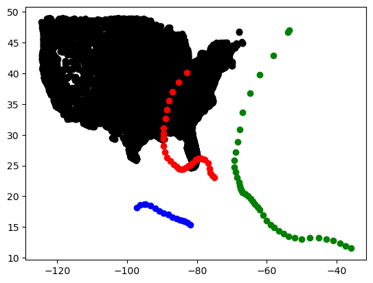
continental_us = cities[cities['state_id'].apply(lambda x: x not in ['HI', 'AK'])]
plt.scatter(continental_us['lng'], continental_us['lat'], s=1, c='black', alpha=0.5)
plt.xlim(-140, 0)
# plt.ylim(20, 50)
plt.scatter(atlantic['Longitude'], atlantic['Latitude'], s=1, c=atlantic['Maximum Wind'], alpha=0.5)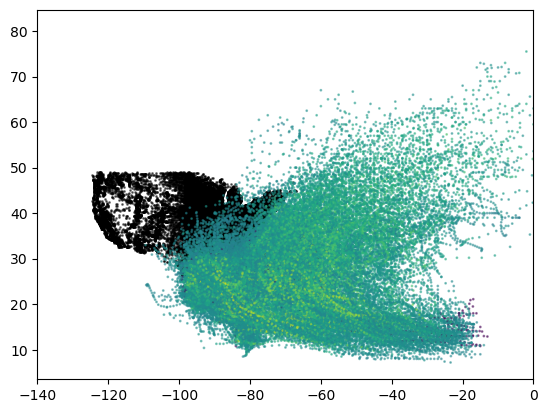
greenville = cities[(cities['city'] == 'Greenville') & (cities['state_id'] == 'SC')]greenville['lat']22533 34.8353
Name: lat, dtype: float64filtered = atlantic[(atlantic['Latitude'].round() == greenville['lat'].iloc[0].round()) & \
(atlantic['Longitude'].round() == greenville['lng'].iloc[0].round())]filtered| ID | Name | Date | Time | Event | Status | Latitude | Longitude | Maximum Wind | Minimum Pressure | ... | Low Wind NW | Moderate Wind NE | Moderate Wind SE | Moderate Wind SW | Moderate Wind NW | High Wind NE | High Wind SE | High Wind SW | High Wind NW | year | |
|---|---|---|---|---|---|---|---|---|---|---|---|---|---|---|---|---|---|---|---|---|---|
| 12189 | AL031911 | UNNAMED | 19110831 | 0 | EX | 35.4 | -82.5 | 25 | -999 | ... | -999 | -999 | -999 | -999 | -999 | -999 | -999 | -999 | -999 | 1911 | |
| 12615 | AL041913 | UNNAMED | 19130904 | 600 | TD | 35.0 | -81.5 | 25 | -999 | ... | -999 | -999 | -999 | -999 | -999 | -999 | -999 | -999 | -999 | 1913 | |
| 13062 | AL041916 | UNNAMED | 19160715 | 600 | TS | 34.6 | -81.8 | 45 | -999 | ... | -999 | -999 | -999 | -999 | -999 | -999 | -999 | -999 | -999 | 1916 | |
| 21545 | AL021949 | UNNAMED | 19490828 | 1800 | TS | 34.7 | -82.2 | 50 | 1000 | ... | -999 | -999 | -999 | -999 | -999 | -999 | -999 | -999 | -999 | 1949 | |
| 26847 | AL051964 | CLEO | 19640830 | 1800 | TD | 34.6 | -81.5 | 25 | -999 | ... | -999 | -999 | -999 | -999 | -999 | -999 | -999 | -999 | -999 | 1964 | |
| 28384 | AL011968 | ABBY | 19680609 | 0 | TD | 35.0 | -82.0 | 25 | -999 | ... | -999 | -999 | -999 | -999 | -999 | -999 | -999 | -999 | -999 | 1968 | |
| 28385 | AL011968 | ABBY | 19680609 | 600 | TD | 35.3 | -81.8 | 25 | -999 | ... | -999 | -999 | -999 | -999 | -999 | -999 | -999 | -999 | -999 | 1968 |
7 rows × 23 columns
atlantic['Name'] = atlantic['Name'].apply(lambda x: x.strip())
atlantic['Status'] = atlantic['Status'].apply(lambda x: x.strip())ivan = atlantic[(atlantic['Name'] == 'IVAN') & (atlantic['year'] == 2004)]
plt.scatter(ivan['Longitude'], ivan['Latitude'], c='r')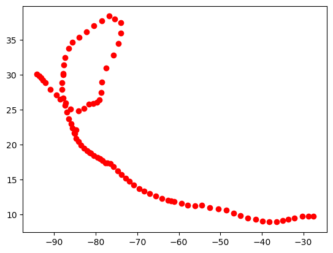
atlantic.head()| ID | Name | Date | Time | Event | Status | Latitude | Longitude | Maximum Wind | Minimum Pressure | ... | Low Wind NW | Moderate Wind NE | Moderate Wind SE | Moderate Wind SW | Moderate Wind NW | High Wind NE | High Wind SE | High Wind SW | High Wind NW | year | |
|---|---|---|---|---|---|---|---|---|---|---|---|---|---|---|---|---|---|---|---|---|---|
| 0 | AL011851 | UNNAMED | 18510625 | 0 | HU | 28.0 | -94.8 | 80 | -999 | ... | -999 | -999 | -999 | -999 | -999 | -999 | -999 | -999 | -999 | 1851 | |
| 1 | AL011851 | UNNAMED | 18510625 | 600 | HU | 28.0 | -95.4 | 80 | -999 | ... | -999 | -999 | -999 | -999 | -999 | -999 | -999 | -999 | -999 | 1851 | |
| 2 | AL011851 | UNNAMED | 18510625 | 1200 | HU | 28.0 | -96.0 | 80 | -999 | ... | -999 | -999 | -999 | -999 | -999 | -999 | -999 | -999 | -999 | 1851 | |
| 3 | AL011851 | UNNAMED | 18510625 | 1800 | HU | 28.1 | -96.5 | 80 | -999 | ... | -999 | -999 | -999 | -999 | -999 | -999 | -999 | -999 | -999 | 1851 | |
| 4 | AL011851 | UNNAMED | 18510625 | 2100 | L | HU | 28.2 | -96.8 | 80 | -999 | ... | -999 | -999 | -999 | -999 | -999 | -999 | -999 | -999 | -999 | 1851 |
5 rows × 23 columns
cleo = atlantic[(atlantic['Name'] == 'CLEO')]# & (atlantic['Status'] == 'TS')]
abby = atlantic[(atlantic['Name'] == 'ABBY')]# & (atlantic['Status'] == 'TS')]
plt.scatter(cities['lng'], cities['lat'], c='black')
plt.xlim(-130, -20)
# plot abby
sc = plt.scatter(abby['Longitude'], abby['Latitude'], c=abby['Date'], cmap='Blues')
sc = plt.scatter(cleo['Longitude'], cleo['Latitude'], c=cleo['Date'], cmap='Reds')
plt.colorbar(sc)
# plot green ville
plt.scatter(greenville['lng'], greenville['lat'], c='blue')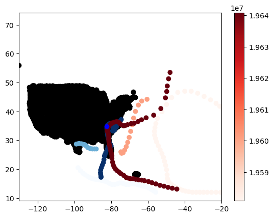
katrina = atlantic[(atlantic['Name'] == 'KATRINA') & (atlantic['year'] == 2005)]plt.scatter(cities['lng'], cities['lat'], c='black')
plt.scatter(katrina['Longitude'], katrina['Latitude'], c=katrina['Maximum Wind'], cmap='Reds')
plt.xlim(-130, -20)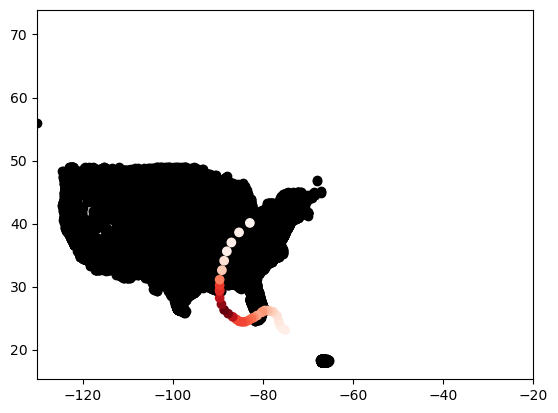
fig, ax = plt.subplots(figsize=(10, 5))
ax.scatter(cities['lng'], cities['lat'], c='black')
plt.xlim(-150, -20)
plt.ylim(10, 50)
sc = ax.scatter(atlantic['Longitude'], atlantic['Latitude'], c=atlantic['Maximum Wind'],s=1, alpha=0.5)
# show colorbar for wind speed
plt.colorbar(sc)
cbar.set_label('Wind Speed (kts)')
ax.scatter(greenville['lng'], greenville['lat'], c='red')
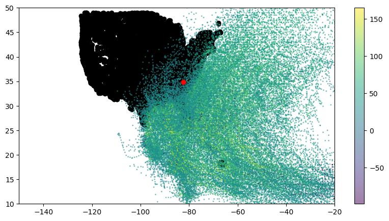
fig, ax = plt.subplots(figsize=(10, 5))
ax.scatter(cities['lng'], cities['lat'], c='black')
plt.xlim(-150, -20)
plt.ylim(10, 50)
sc = ax.scatter(pacific['Longitude'], pacific['Latitude'], c=pacific['Maximum Wind'],s=1, alpha=0.5)
# show colorbar for wind speed
plt.colorbar(sc)
cbar.set_label('Wind Speed (kts)')
ax.scatter(greenville['lng'], greenville['lat'], c='red')

atlantic['year'] = atlantic['Date'].apply(lambda x: int(str(x)[:4]))atlantic| ID | Name | Date | Time | Event | Status | Latitude | Longitude | Maximum Wind | Minimum Pressure | ... | Low Wind NW | Moderate Wind NE | Moderate Wind SE | Moderate Wind SW | Moderate Wind NW | High Wind NE | High Wind SE | High Wind SW | High Wind NW | year | |
|---|---|---|---|---|---|---|---|---|---|---|---|---|---|---|---|---|---|---|---|---|---|
| 0 | AL011851 | UNNAMED | 18510625 | 0 | HU | 28.0 | -94.8 | 80 | -999 | ... | -999 | -999 | -999 | -999 | -999 | -999 | -999 | -999 | -999 | 1851 | |
| 1 | AL011851 | UNNAMED | 18510625 | 600 | HU | 28.0 | -95.4 | 80 | -999 | ... | -999 | -999 | -999 | -999 | -999 | -999 | -999 | -999 | -999 | 1851 | |
| 2 | AL011851 | UNNAMED | 18510625 | 1200 | HU | 28.0 | -96.0 | 80 | -999 | ... | -999 | -999 | -999 | -999 | -999 | -999 | -999 | -999 | -999 | 1851 | |
| 3 | AL011851 | UNNAMED | 18510625 | 1800 | HU | 28.1 | -96.5 | 80 | -999 | ... | -999 | -999 | -999 | -999 | -999 | -999 | -999 | -999 | -999 | 1851 | |
| 4 | AL011851 | UNNAMED | 18510625 | 2100 | L | HU | 28.2 | -96.8 | 80 | -999 | ... | -999 | -999 | -999 | -999 | -999 | -999 | -999 | -999 | -999 | 1851 |
| ... | ... | ... | ... | ... | ... | ... | ... | ... | ... | ... | ... | ... | ... | ... | ... | ... | ... | ... | ... | ... | ... |
| 49100 | AL122015 | KATE | 20151112 | 1200 | EX | 41.3 | -50.4 | 55 | 981 | ... | 120 | 120 | 120 | 60 | 0 | 0 | 0 | 0 | 0 | 2015 | |
| 49101 | AL122015 | KATE | 20151112 | 1800 | EX | 41.9 | -49.9 | 55 | 983 | ... | 120 | 120 | 120 | 60 | 0 | 0 | 0 | 0 | 0 | 2015 | |
| 49102 | AL122015 | KATE | 20151113 | 0 | EX | 41.5 | -49.2 | 50 | 985 | ... | 220 | 120 | 120 | 60 | 0 | 0 | 0 | 0 | 0 | 2015 | |
| 49103 | AL122015 | KATE | 20151113 | 600 | EX | 40.8 | -47.5 | 45 | 985 | ... | 220 | 0 | 0 | 0 | 0 | 0 | 0 | 0 | 0 | 2015 | |
| 49104 | AL122015 | KATE | 20151113 | 1200 | EX | 40.7 | -45.4 | 45 | 987 | ... | 220 | 0 | 0 | 0 | 0 | 0 | 0 | 0 | 0 | 2015 |
49105 rows × 23 columns
plt.scatter(atlantic['Longitude'], atlantic['Latitude'], c=atlantic['year'], alpha=0.01)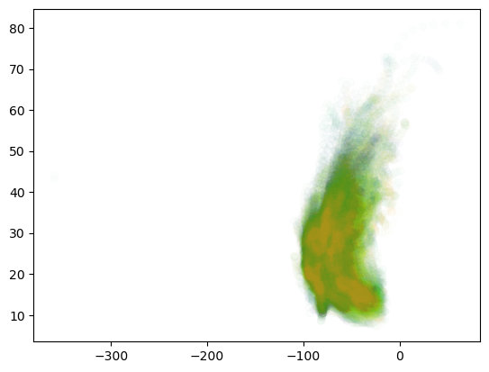
atlantic| ID | Name | Date | Time | Event | Status | Latitude | Longitude | Maximum Wind | Minimum Pressure | ... | Low Wind NW | Moderate Wind NE | Moderate Wind SE | Moderate Wind SW | Moderate Wind NW | High Wind NE | High Wind SE | High Wind SW | High Wind NW | year | |
|---|---|---|---|---|---|---|---|---|---|---|---|---|---|---|---|---|---|---|---|---|---|
| 0 | AL011851 | UNNAMED | 18510625 | 0 | HU | 28.0 | -94.8 | 80 | -999 | ... | -999 | -999 | -999 | -999 | -999 | -999 | -999 | -999 | -999 | 1851 | |
| 1 | AL011851 | UNNAMED | 18510625 | 600 | HU | 28.0 | -95.4 | 80 | -999 | ... | -999 | -999 | -999 | -999 | -999 | -999 | -999 | -999 | -999 | 1851 | |
| 2 | AL011851 | UNNAMED | 18510625 | 1200 | HU | 28.0 | -96.0 | 80 | -999 | ... | -999 | -999 | -999 | -999 | -999 | -999 | -999 | -999 | -999 | 1851 | |
| 3 | AL011851 | UNNAMED | 18510625 | 1800 | HU | 28.1 | -96.5 | 80 | -999 | ... | -999 | -999 | -999 | -999 | -999 | -999 | -999 | -999 | -999 | 1851 | |
| 4 | AL011851 | UNNAMED | 18510625 | 2100 | L | HU | 28.2 | -96.8 | 80 | -999 | ... | -999 | -999 | -999 | -999 | -999 | -999 | -999 | -999 | -999 | 1851 |
| ... | ... | ... | ... | ... | ... | ... | ... | ... | ... | ... | ... | ... | ... | ... | ... | ... | ... | ... | ... | ... | ... |
| 49100 | AL122015 | KATE | 20151112 | 1200 | EX | 41.3 | -50.4 | 55 | 981 | ... | 120 | 120 | 120 | 60 | 0 | 0 | 0 | 0 | 0 | 2015 | |
| 49101 | AL122015 | KATE | 20151112 | 1800 | EX | 41.9 | -49.9 | 55 | 983 | ... | 120 | 120 | 120 | 60 | 0 | 0 | 0 | 0 | 0 | 2015 | |
| 49102 | AL122015 | KATE | 20151113 | 0 | EX | 41.5 | -49.2 | 50 | 985 | ... | 220 | 120 | 120 | 60 | 0 | 0 | 0 | 0 | 0 | 2015 | |
| 49103 | AL122015 | KATE | 20151113 | 600 | EX | 40.8 | -47.5 | 45 | 985 | ... | 220 | 0 | 0 | 0 | 0 | 0 | 0 | 0 | 0 | 2015 | |
| 49104 | AL122015 | KATE | 20151113 | 1200 | EX | 40.7 | -45.4 | 45 | 987 | ... | 220 | 0 | 0 | 0 | 0 | 0 | 0 | 0 | 0 | 2015 |
49105 rows × 23 columns
atlantic['decade'] = atlantic['year'] // 50 * 50
plt.scatter(atlantic['Longitude'], atlantic['Latitude'], c=atlantic['decade'])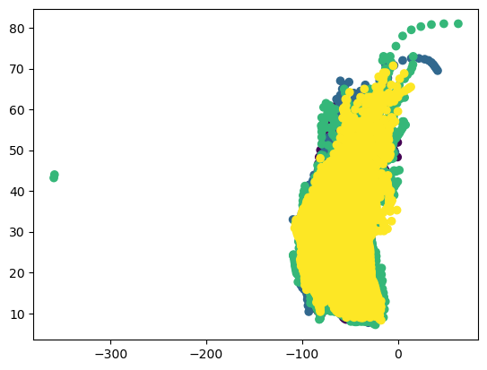
atlantic.groupby('year').mean()['Maximum Wind'].plot()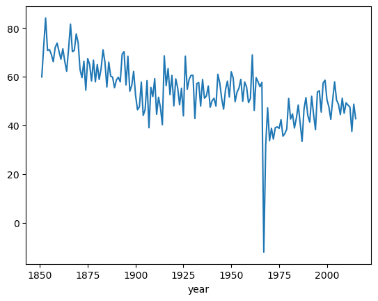
Trajectory
Disasters Increasing
data = pd.read_csv('../data/GlobalLandTemperaturesByMajorCity.csv')data[data['Country']=='United States']['City'].value_counts()Chicago 3239
New York 3239
Los Angeles 1977
Name: City, dtype: int64data['Entity'].value_counts()All disasters 125
All disasters excluding extreme temperature 125
All disasters excluding earthquakes 124
Earthquake 123
Extreme weather 121
Flood 100
Drought 95
Wet mass movement 88
Volcanic activity 83
Wildfire 64
Extreme temperature 63
Dry mass movement 29
Glacial lake outburst flood 3
Fog 1
Name: Entity, dtype: int64all = data[data['Entity'] == 'Extreme weather']
plt.plot(all['Year'], all['Disasters'])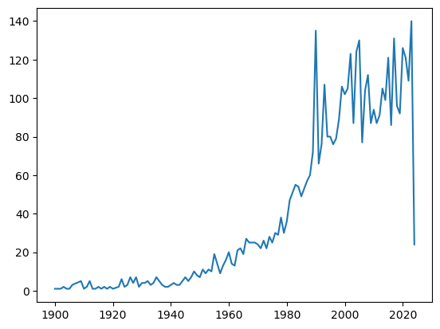
data = pd.read_csv('../data/hurricanes/storms_updated.csv')
Question 6. Hurricanes affecting Greenville, SC
Identify the hurricanes that have affected Greenville, SC.
You can round the latitude and longitude of Greenville, SC as well as the latitude and longitude of the hurricanes to the nearest integer. If the rounded latitude and longitude of Greenville, SC matches the rounded latitude and longitude of the hurricanes, then the hurricanes have affected Greenville, SC.
Plot the paths of these hurricanes on a map. The paths should be colored based on the Wind Speed column. The paths should be drawn using the Latitude and Longitude columns.
# Find hurricanes in the proximity of Greenville, SC
greenville = cities[(cities['city'] == 'Greenville') & (cities['state_id'] == 'SC')]
greenville
filtered = data[(data['lat'].round() == greenville['lat'].iloc[0].round()) & \
(data['long'].round() == greenville['lng'].iloc[0].round())]
filtered| name | year | month | day | hour | lat | long | status | category | wind | pressure | tropicalstorm_force_diameter | hurricane_force_diameter | |
|---|---|---|---|---|---|---|---|---|---|---|---|---|---|
| 585 | AL021949 | 1949 | 8 | 28 | 18 | 34.7 | -82.2 | tropical storm | 0 | 50 | 1000 | NaN | NaN |
| 16165 | Florence | 2018 | 9 | 17 | 0 | 35.0 | -82.2 | tropical depression | -1 | 25 | 1007 | 0.0 | 0.0 |
Question Draw hurricane trajectories
Plot scatter plot of hurricane trajectories using lat and long columns.

The paths should be colored based on the wind column.
Use Reds as the color map and create a color bar for the scatter plot to show the wind speed.
Additionally, plot the following cities on the map using the lat and long columns:
city |
state_id |
marker |
color |
|---|---|---|---|
| New York | NY | o |
blue |
| Washington | DC | ^ |
blue |
| Greenville | SC | x |
blue |
| Charleston | SC | d |
blue |
| Miami | FL | s |
blue |
The plot should have a title, the axes should be labeled and the plot should have a legend.
sc = plt.scatter(data['long'], data['lat'], c=data['wind'], cmap='Reds')
plt.colorbar(sc)
# plot greenville, asheville, atlanta, charlotte
cities = pd.read_csv('../data/uscities.csv')
dc = cities[(cities['city'] == 'Washington') & (cities['state_id'] == 'DC')]
greenville = cities[(cities['city'] == 'Greenville') & (cities['state_id'] == 'SC')]
jacksonville = cities[(cities['city'] == 'Jacksonville') & (cities['state_id'] == 'FL')]
asheville = cities[(cities['city'] == 'Columbia') & (cities['state_id'] == 'SC')]
miami = cities[(cities['city'] == 'Miami') & (cities['state_id'] == 'FL')]
charleston = cities[(cities['city'] == 'Charleston') & (cities['state_id'] == 'SC')]
nyc = cities[(cities['city'] == 'New York') & (cities['state_id'] == 'NY')]
# plt.scatter(cities['lng'], cities['lat'], c='white', alpha=0.01)
plt.scatter(nyc['lng'], nyc['lat'], c='blue', marker='o', label='NYC')
plt.scatter(dc['lng'], dc['lat'], c='blue', marker='^', label='Washington')
plt.scatter(greenville['lng'], greenville['lat'], c='blue', marker='x', label='Greenville')
plt.scatter(charleston['lng'], charleston['lat'], c='blue', marker='d', label='Charleston')
# plt.scatter(jacksonville['lng'], jacksonville['lat'], c='blue', marker='o', label='Jacksonville')
plt.scatter(miami['lng'], miami['lat'], c='blue', marker='s', label='Miami')
plt.legend()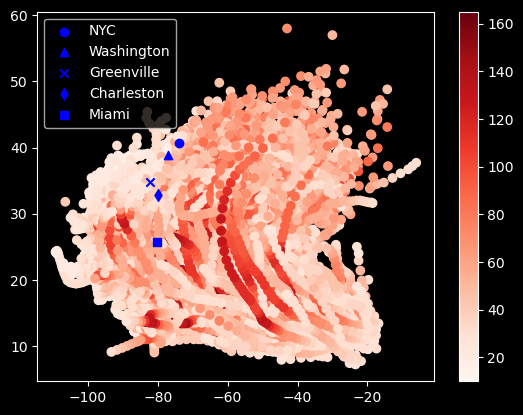
fig, ax = plt.subplots()
ax.set_facecolor('lightblue')
katrina = data[(data['name'] == 'Katrina') & (data['year'] == 2005)]
maria = data[(data['name'] == 'Maria') & (data['year'] == 2017)]
harvey = data[(data['name'] == 'Harvey') & (data['year'] == 2017)]
ax.scatter(continental_us['lng'], continental_us['lat'], c='sandybrown')
plt.scatter(katrina['long'], katrina['lat'], c='red', label='Katrina')
plt.scatter(maria['long'], maria['lat'], c='green', label='Maria')
plt.scatter(harvey['long'], harvey['lat'], c='blue', label='Harvey')
plt.legend()
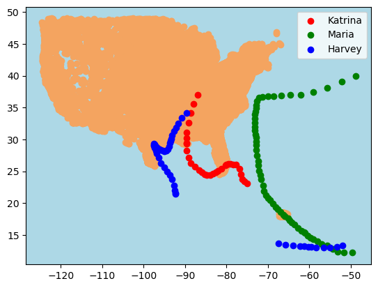
# category4 = data[data['category'] == 4]
sc = plt.scatter(data['long'], data['lat'], c=data['year'])
plt.scatter(continental_us['lng'], continental_us['lat'], c='red', s=1, alpha=0.1)
plt.colorbar(sc)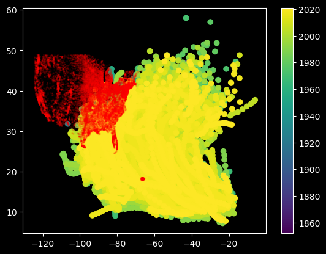
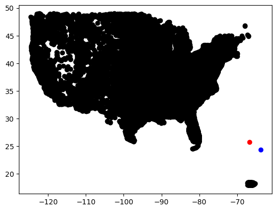
Question. Has Hurricane Season shifted?
data[data['year']>=2000]['month'].mean(), data[data['year']<2000]['month'].mean()(8.688976850185918, 8.744946555191026)Question. Have Hurricanes changed in their location?
beforex, afterx = data[data['year']<2000]['long'].mean(), data[data['year']>=2000]['long'].mean()
beforey, aftery = data[data['year']<2000]['lat'].mean(), data[data['year']>=2000]['lat'].mean()
plt.scatter(data['long'], data['lat'], c=data['year'])
plt.scatter(beforex, beforey, c='red')
plt.scatter(afterx, aftery, c='blue')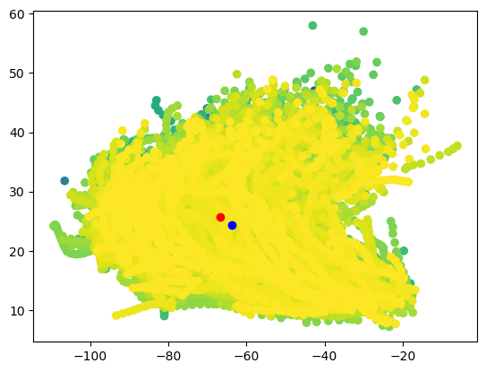
Question 4. Find Hurricanes closest to Greenville, SC
Question 5. How do the number of hurricanes in 100 years from 1900 - 1999 compare to the number of hurricanes in 24 years from 2000 - 2024?
import pandas as pd
data = pd.read_csv('https://raw.githubusercontent.com/fahadsultan/csc272/refs/heads/main/data/GlobalLandTemperaturesByCity_decade.csv')
data['date'] = pd.to_datetime(data['dt'])
data['year'] = data['date'].apply(lambda x: x.year)
data['month'] = data['date'].apply(lambda x: x.month)
data['day'] = data['date'].apply(lambda x: x.day)
data.head()| dt | AverageTemperature | City | Country | Latitude | Longitude | date | year | month | day | |
|---|---|---|---|---|---|---|---|---|---|---|
| 0 | 1750-01-01 | 1.699 | Århus | Denmark | 57.05N | 10.33E | 1750-01-01 | 1750 | 1 | 1 |
| 1 | 1750-02-01 | 3.961 | Århus | Denmark | 57.05N | 10.33E | 1750-02-01 | 1750 | 2 | 1 |
| 2 | 1750-03-01 | 5.182 | Århus | Denmark | 57.05N | 10.33E | 1750-03-01 | 1750 | 3 | 1 |
| 3 | 1750-04-01 | 7.197 | Århus | Denmark | 57.05N | 10.33E | 1750-04-01 | 1750 | 4 | 1 |
| 4 | 1750-05-01 | 10.634 | Århus | Denmark | 57.05N | 10.33E | 1750-05-01 | 1750 | 5 | 1 |
data['year'].max()2010data['Latitude'] = data['Latitude'].apply(convert_lat)
data['Longitude'] = data['Longitude'].apply(convert_lon)
Question. Plot change in temperature over time
Temperature data is given in the temperature dataset. Change in temperature over time is not uniform across the globe. Some regions are experiencing a higher rate of temperature increase compared to others. Plot the change in temperature over time for the following cities:
- Atlanta, USA
- Calcutta, India
- Nairobi, Kenya
- Tokyo, Japan
- Dublin, Ireland
Use only June 1 data for each year, starting from 1900 to 2024.
The x-axis should represent a decade, and the y-axis should represent change in temperature, using 1900 as the baseline (1900 should be 0).
For change in temperature, use the difference between the temperature in 1900 and the temperature in each year.
Each city should be represented by a different color in the plot.
The plot should have a title, x-axis label, y-axis label, and a legend.
Additionally, draw a horizontal line at y=0 to represent the baseline temperature in 1900.
from matplotlib import pyplot as plt
temperatures = data[data['year']>= 1900]
atlanta = temperatures[temperatures['City']=='Atlanta']
lahore = temperatures[temperatures['City']=='Calcutta']
tokyo = temperatures[temperatures['City']=='Tokyo']
nairobi = temperatures[temperatures['City']=='Nairobi']
dublin = temperatures[temperatures['City']=='Dublin']
atlanta_aug = atlanta[(atlanta['month'] == 6) & (atlanta['day'] == 1)]
lahore_aug = lahore[(lahore['month'] == 6) & (lahore['day'] == 1)]
tokyo_aug = tokyo[(tokyo['month'] == 6) & (tokyo['day'] == 1)]
nairobi_aug = nairobi[(nairobi['month'] == 6) & (nairobi['day'] == 1)]
dublin_aug = dublin[(dublin['month'] == 6) & (dublin['day'] == 1)]
atlanta_aug['delta'] = atlanta_aug['AverageTemperature']-atlanta_aug['AverageTemperature'].iloc[0]
lahore_aug['delta'] = lahore_aug['AverageTemperature']-lahore_aug['AverageTemperature'].iloc[0]
tokyo_aug['delta'] = tokyo_aug['AverageTemperature']-tokyo_aug['AverageTemperature'].iloc[0]
nairobi_aug['delta'] = nairobi_aug['AverageTemperature']-nairobi_aug['AverageTemperature'].iloc[0]
dublin_aug['delta'] = dublin_aug['AverageTemperature']-dublin_aug['AverageTemperature'].iloc[0]
plt.plot(atlanta_aug['year'], atlanta_aug['delta'], label='Atlanta', marker='o')
plt.plot(lahore_aug['year'], lahore_aug['delta'], label='Calcutta', marker='o')
plt.plot(tokyo_aug['year'], tokyo_aug['delta'], label='Tokyo', marker='o')
plt.plot(nairobi_aug['year'], nairobi_aug['delta'], label='Nairobi', marker='o')
plt.plot(dublin_aug['year'], dublin_aug['delta'], label='Dublin', marker='o')
plt.plot([1900, 2020], [0, 0], 'k--')
plt.legend()/var/folders/l9/y8y3rmys2sl93tzzph3dl7jw0000gr/T/ipykernel_30118/4155621840.py:17: SettingWithCopyWarning:
A value is trying to be set on a copy of a slice from a DataFrame.
Try using .loc[row_indexer,col_indexer] = value instead
See the caveats in the documentation: https://pandas.pydata.org/pandas-docs/stable/user_guide/indexing.html#returning-a-view-versus-a-copy
atlanta_aug['delta'] = atlanta_aug['AverageTemperature']-atlanta_aug['AverageTemperature'].iloc[0]
/var/folders/l9/y8y3rmys2sl93tzzph3dl7jw0000gr/T/ipykernel_30118/4155621840.py:18: SettingWithCopyWarning:
A value is trying to be set on a copy of a slice from a DataFrame.
Try using .loc[row_indexer,col_indexer] = value instead
See the caveats in the documentation: https://pandas.pydata.org/pandas-docs/stable/user_guide/indexing.html#returning-a-view-versus-a-copy
lahore_aug['delta'] = lahore_aug['AverageTemperature']-lahore_aug['AverageTemperature'].iloc[0]
/var/folders/l9/y8y3rmys2sl93tzzph3dl7jw0000gr/T/ipykernel_30118/4155621840.py:19: SettingWithCopyWarning:
A value is trying to be set on a copy of a slice from a DataFrame.
Try using .loc[row_indexer,col_indexer] = value instead
See the caveats in the documentation: https://pandas.pydata.org/pandas-docs/stable/user_guide/indexing.html#returning-a-view-versus-a-copy
tokyo_aug['delta'] = tokyo_aug['AverageTemperature']-tokyo_aug['AverageTemperature'].iloc[0]
/var/folders/l9/y8y3rmys2sl93tzzph3dl7jw0000gr/T/ipykernel_30118/4155621840.py:20: SettingWithCopyWarning:
A value is trying to be set on a copy of a slice from a DataFrame.
Try using .loc[row_indexer,col_indexer] = value instead
See the caveats in the documentation: https://pandas.pydata.org/pandas-docs/stable/user_guide/indexing.html#returning-a-view-versus-a-copy
nairobi_aug['delta'] = nairobi_aug['AverageTemperature']-nairobi_aug['AverageTemperature'].iloc[0]
/var/folders/l9/y8y3rmys2sl93tzzph3dl7jw0000gr/T/ipykernel_30118/4155621840.py:21: SettingWithCopyWarning:
A value is trying to be set on a copy of a slice from a DataFrame.
Try using .loc[row_indexer,col_indexer] = value instead
See the caveats in the documentation: https://pandas.pydata.org/pandas-docs/stable/user_guide/indexing.html#returning-a-view-versus-a-copy
dublin_aug['delta'] = dublin_aug['AverageTemperature']-dublin_aug['AverageTemperature'].iloc[0]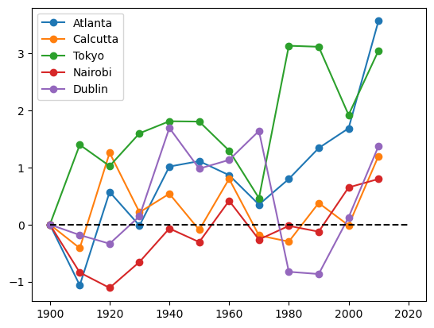

Question 3. Create a ‘Map’ of change in temperature
Make a scatter plot of the change in temperature for each city. The x-axis should represent the longitude, and the y-axis should represent the latitude. The color of the points should represent the change in temperature for each city, between 1900 and 2024.
The plot should have a title, x-axis label, y-axis label, and a legend.
Use cmap=coolwarm as the colormap for the scatter plot. You can make a colorbar using plt.colorbar(sc) where sc is the scatter plot object, returned by plt.scatter().
data['Latitude'] = data['Latitude'].apply(convert_lat)
data['Longitude'] = data['Longitude'].apply(convert_lon)
start = data[(data['year']==1900) & (data['month']==8) & (data['day']==1)]
end = data[(data['year']==2000) & (data['month']==8) & (data['day']==1)]
merged = pd.merge(start, end[['AverageTemperature', 'City', 'Country']], on=['City', 'Country'])
merged['diff'] = merged['AverageTemperature_y'] - merged['AverageTemperature_x']--------------------------------------------------------------------------- TypeError Traceback (most recent call last) Cell In[486], line 1 ----> 1 data['Latitude'] = data['Latitude'].apply(convert_lat) 2 data['Longitude'] = data['Longitude'].apply(convert_lon) 4 start = data[(data['year']==1900) & (data['month']==8) & (data['day']==1)] File ~/opt/anaconda3/lib/python3.9/site-packages/pandas/core/series.py:4433, in Series.apply(self, func, convert_dtype, args, **kwargs) 4323 def apply( 4324 self, 4325 func: AggFuncType, (...) 4328 **kwargs, 4329 ) -> DataFrame | Series: 4330 """ 4331 Invoke function on values of Series. 4332 (...) 4431 dtype: float64 4432 """ -> 4433 return SeriesApply(self, func, convert_dtype, args, kwargs).apply() File ~/opt/anaconda3/lib/python3.9/site-packages/pandas/core/apply.py:1082, in SeriesApply.apply(self) 1078 if isinstance(self.f, str): 1079 # if we are a string, try to dispatch 1080 return self.apply_str() -> 1082 return self.apply_standard() File ~/opt/anaconda3/lib/python3.9/site-packages/pandas/core/apply.py:1137, in SeriesApply.apply_standard(self) 1131 values = obj.astype(object)._values 1132 # error: Argument 2 to "map_infer" has incompatible type 1133 # "Union[Callable[..., Any], str, List[Union[Callable[..., Any], str]], 1134 # Dict[Hashable, Union[Union[Callable[..., Any], str], 1135 # List[Union[Callable[..., Any], str]]]]]"; expected 1136 # "Callable[[Any], Any]" -> 1137 mapped = lib.map_infer( 1138 values, 1139 f, # type: ignore[arg-type] 1140 convert=self.convert_dtype, 1141 ) 1143 if len(mapped) and isinstance(mapped[0], ABCSeries): 1144 # GH#43986 Need to do list(mapped) in order to get treated as nested 1145 # See also GH#25959 regarding EA support 1146 return obj._constructor_expanddim(list(mapped), index=obj.index) File ~/opt/anaconda3/lib/python3.9/site-packages/pandas/_libs/lib.pyx:2870, in pandas._libs.lib.map_infer() Cell In[246], line 5, in convert_lat(x) 4 def convert_lat(x): ----> 5 return -1*float(x[:-1]) if x[-1] == 'S' else float(x[:-1]) TypeError: 'float' object is not subscriptable
plt.style.use('dark_background')
fig, ax = plt.subplots(figsize=(10, 5))
sc = ax.scatter(merged['Longitude'], merged['Latitude'], s=20, c=merged['diff'], cmap='coolwarm')
# sc = ax[0].scatter(start['Longitude'], start['Latitude'], c=start['AverageTemperature'])
plt.colorbar(sc)
# sc = ax[1].scatter(end['Longitude'], end['Latitude'], c=end['AverageTemperature'])
# plt.colorbar(sc)
# plt.grid()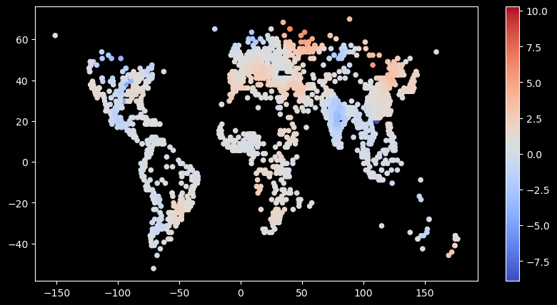